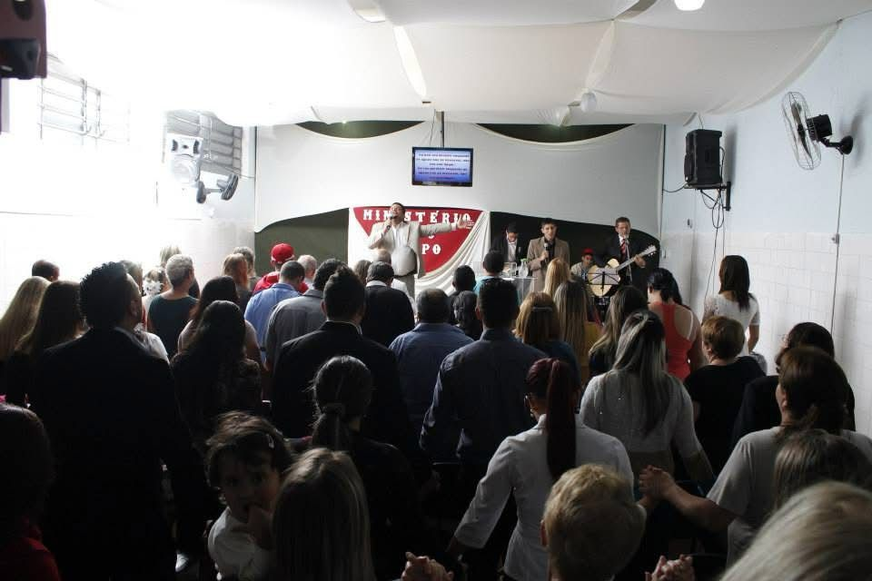
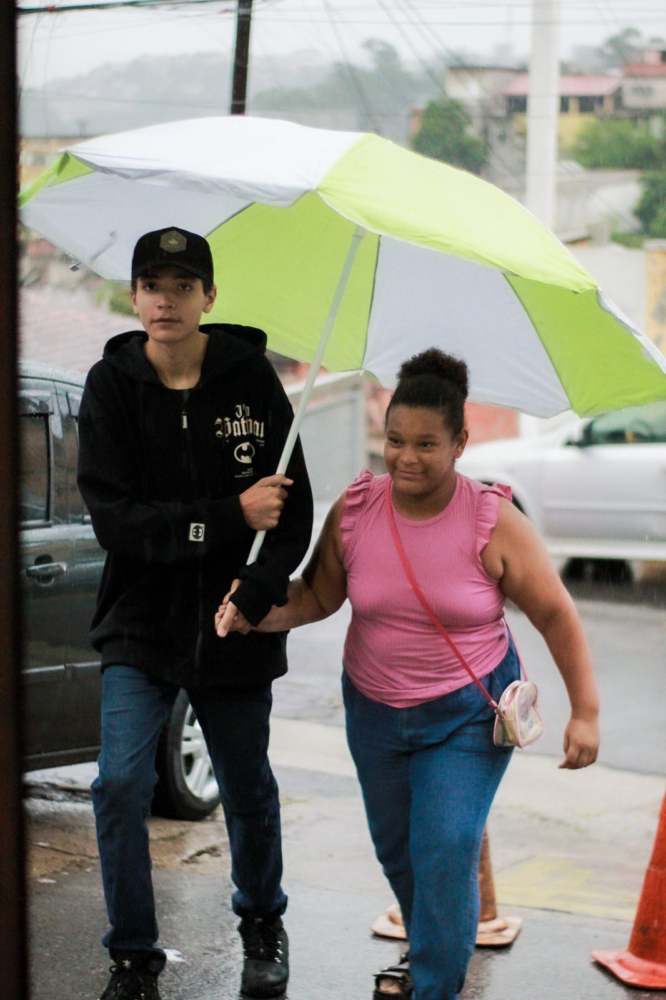

Quem Somos
📖 Um Sonho que se Tornou Missão
 Em 2011, nasceu no coração de Deus o sonho de enviar uma família a uma cidade até então desconhecida para eles: Franco da Rocha. Embora o casal Samuel e Thaís fosse apaixonado por Jesus, inicialmente não tinham o desejo de liderar uma igreja. Seu anseio era ver vidas transformadas pelo poder da Palavra.
Com a ajuda de pessoas cheias de fé e ousadia, que alugaram um espaço, arrumaram cadeiras, instrumentos musicais e organizaram um culto, surgiu a Igreja Novo Tempo.
Desde o início, esse ministério tem crescido com propósito e dedicação, impactando famílias e reacendendo a fé em muitos corações.
Liderança com Propósito
Sob a liderança dos bispos Samuel e Thaís, a igreja se tornou um lugar de acolhimento, ensino e avivamento. Com suas três filhas — Emanuelle, Danielle e Letícia — o casal vive o chamado com intensidade e entrega.Thaís, bióloga de formação, hoje neuropsicopedagoga e terapeuta, e Samuel, ex-supervisor de vendas, deixaram suas carreiras para servir em tempo integral no Reino de Deus, assumindo com coragem e fé a missão de conduzir pessoas ao encontro com Cristo.
Nossa Identidade
A trajetória da Novo Tempo é marcada por crescimento, não apenas em número, mas em profundidade espiritual. São vidas restauradas, famílias reerguidas e corações renovados. A igreja se firmou como uma voz profética na cidade, apontando sempre para Jesus como único caminho, verdade e vida. Mais do que uma igreja, a Novo Tempo é uma família espiritual que continua florescendo e avançando, carregando a certeza de que o melhor de Deus ainda está por vir.🎯 Missão

Transformando vidas e espalhando a luz do Evangelho, nossa missão é levar a mensagem de salvação e amor de Cristo a todos, para que cada coração experimente Sua graça e viva no propósito eterno de Deus.
👀 Visão
Guiados pelo amor a Deus e ao próximo, nossa visão é ser uma igreja que acolhe, cuida e oferece apoio incondicional, ajudando cada irmão a crescer espiritualmente e viver em harmonia com o propósito de Cristo.
"Amar a Deus e ao próximo" reflete nosso compromisso em apoiar o crescimento espiritual de todos, alinhando-se com Mateus 22:37-39.
🙏 Conheça nossos pastores
Bispo Samuel e Bispa Thais
Samuel, gerente da empresa Três Corações no ramo de vendas, e Thais, bióloga na Pfizer, tinham carreiras promissoras, mas sentiam um vazio interior. Diante de um forte chamado de Deus, foram profundamente tocados pela necessidade das comunidades carentes e perceberam um propósito maior em servir ao Senhor. Enfrentaram desafios financeiros e a incompreensão de muitos, mas a fé os sustentou. Com o tempo, suas iniciativas prosperaram, impactando inúmeras vidas. Hoje, seguem firmes na missão, testemunhando que a verdadeira realização está em servir a Deus e ao próximo. Se precisar de mais ajustes
.Pastor Caio e Pastora Débora
Com corações dispostos e cheios de fé, ouviram atentamente a voz de Deus e, com coragem, deixaram para trás seus planos pessoais para abraçar o ministério pastoral. Hoje, são referência de liderança jovem, inspirando muitos com seu testemunho e dedicação. Atualmente, a pastora Débora e o pastor Caio servem no Nordeste, levando a mensagem do evangelho e fortalecendo a comunidade da nossa igreja. Com amor e compromisso, trabalham para transformar vidas, guiando jovens e famílias no caminho da fé. O pastor Caio é formado em Bacharelado em Teologia pela UMESP (Universidade Metodista de São Paulo) e a pastora Débora é pedagoga, pós-graduada em Neuropsicologia, Psicomotricidade e Psicopedagogia. Além de sua atuação no ministério pastoral, ambos se dedicam ao ensino teológico, compartilhando seu profundo conhecimento e experiência para formar futuros líderes espirituais. Seu exemplo é um reflexo do poder de Deus agindo através de corações dispostos a servi-Lo.